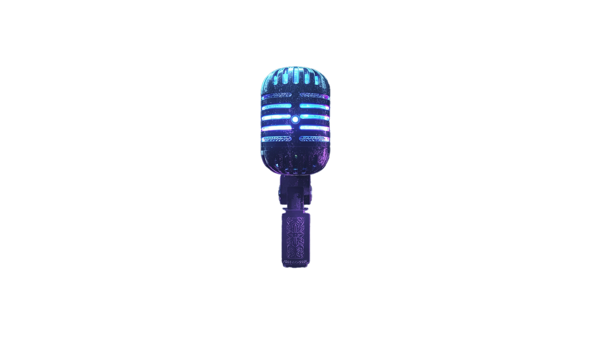

Dju-dju le Totem qui te questionne
Commencer l’expérience
🔊 Activer le son

Réponds à la question…
👉 Oui • Non • Peut-être
🌿 Résultats du Totem 🌿
Catégorie
Score
Conscience
0
Indifférence
0
Réflexion
0